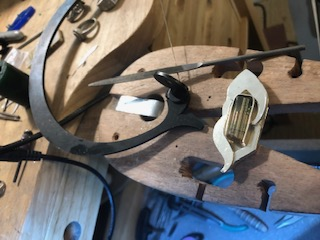
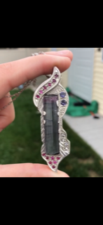
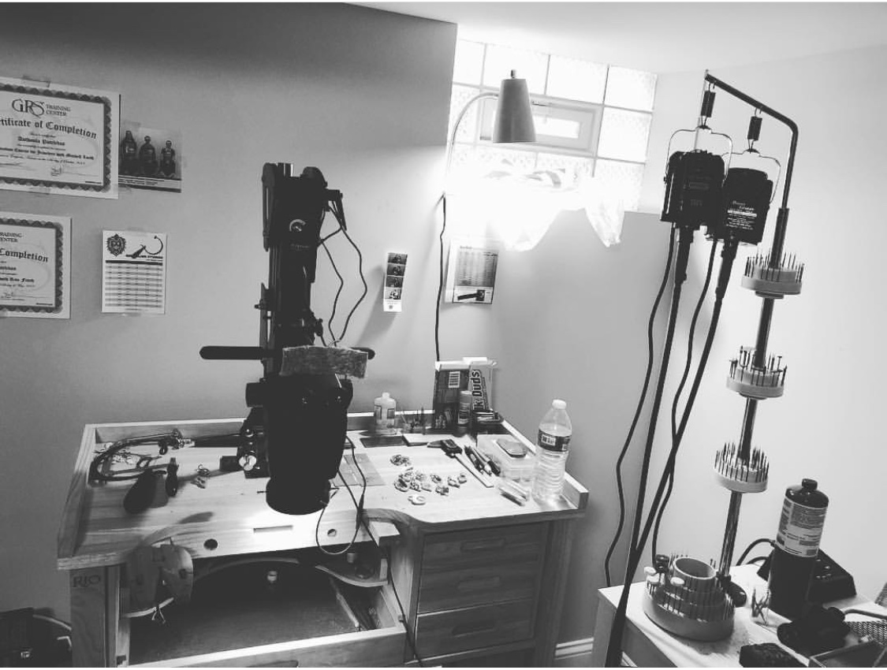
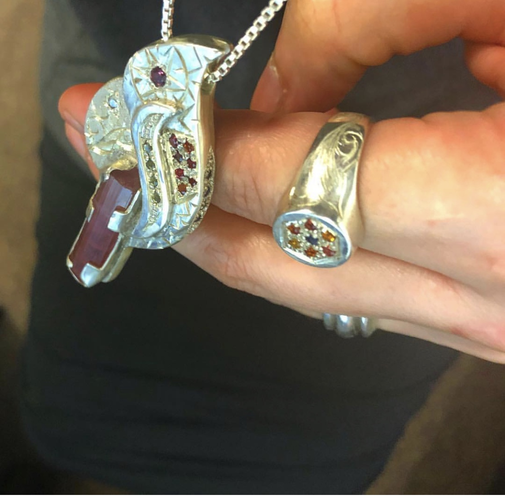
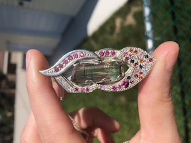
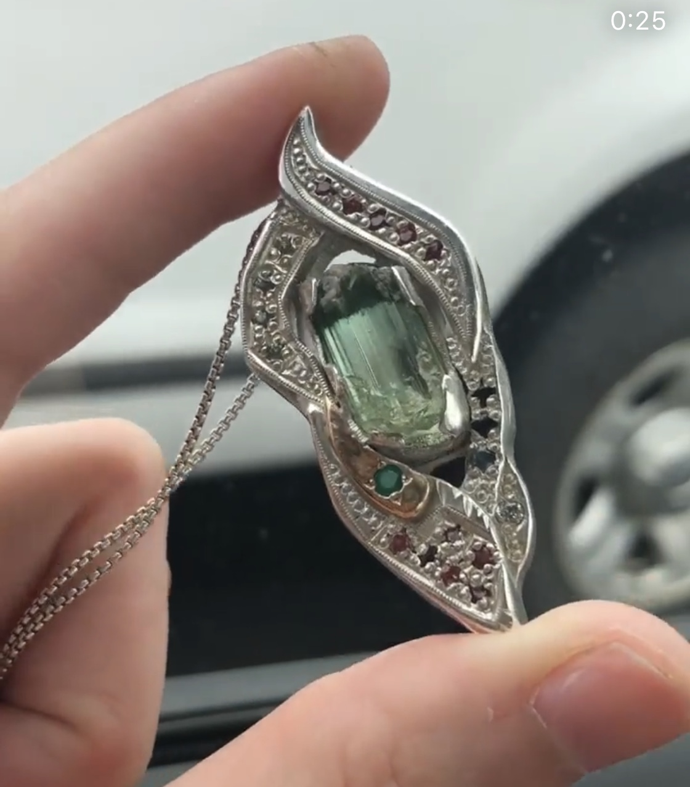

I love to make jewelry. I began making wire wrapped jewelry in 2014 and started making fabricated pieces about a year ago. I create pendants from sterling silver sheet metal. I cut and layer the metal and then solder it together. Then I set stones in the pendant and engrave it using power tools. I am including some of my favorite pieces and a picture of my work space.
A picture of a piece in progress
This piece is sterling silver and has a 7 gram cruziero tourmaline, sapphires, iolite, and diamonds.
My work bench is my favorite space. I currently have a Leica microscope for stone setting and engraving, a graver max, graver hone, and an air compressor.
Sterling silver pendant with a pink tourmaline with a green cap, sapphires, diamond, and a rhodolite garnet. The ring is all sapphires.
Sterling silver pendant with a tourmaline center stone, sapphires, garnets, and diamonds.
Sterling silver with Barra de Salinas tourmaline, emerald, diamond, and sapphires.
Video of the casting process at Lillstreet studio